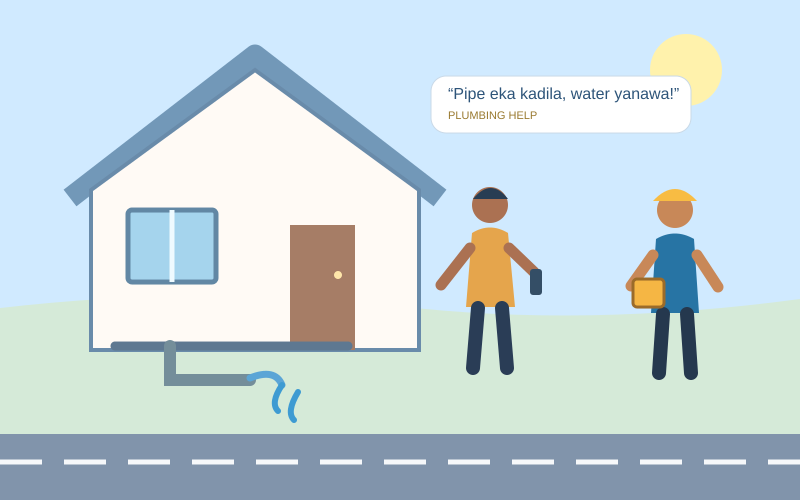
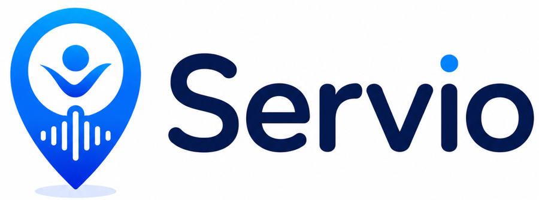

Adaptive Multilingual & Urgency-Aware Voice Intent Model
Multilingual speech intent recognition, fragmented utterances and urgency detection.
Using a Multi-Agent AI Framework
A simple illustrated example of how the three research components work together.

Water is leaking inside the home. The resident uses a phone to ask for a plumber.
“Ane plumber kenek one, pipe eka kadila, water yanawa!”
Illustrative scenario only. No live speech recognition, actual worker dispatch, verified prediction accuracy or guaranteed outcome.
This research explores multilingual voice understanding, context-aware multi-agent service matching and fairness-aware workforce intelligence for accessible local service discovery in Sri Lanka.
Multilingual speech intent recognition, fragmented utterances and urgency detection.
Coordinated context, search, distance, availability and adaptive service provider ranking.
Fair task allocation, dynamic reputation, workforce demand and income stability prediction.
Three connected research contributions for accessible and fair local service discovery in Sri Lanka.
Multilingual speech recognition, context-aware recommendation, multi-agent decision-making and fairness-aware workforce analytics.
Existing approaches rarely integrate mixed-language urgency understanding, adaptive provider coordination and fair job opportunities.
How can voice understanding and coordinated AI improve local service discovery while supporting workers fairly?
Interpret natural voice requests, recommend suitable providers and improve equitable job allocation.
Design Science Research: investigate the problem, design and integrate three AI components, then evaluate with suitable metrics.
Python, speech recognition and NLP, machine learning, geospatial analysis, multi-agent coordination and data analytics.
Detailed methods and evaluation plans are available within each component below. Proposed work is not presented as completed experimental evidence.
Mixed Sinhala–English requests and incomplete urgent speech are hard to interpret.
Speech recognition, NLP and acoustic features (including MFCC, pitch, energy and speech rate) support intent and urgency estimation.
Intent accuracy, precision, recall, F1 and urgency detection performance.
Research proposal / planned evaluation; not a claim of measured final results.
Static rankings overlook urgency, distance, availability and provider reliability.
Context, Search, Distance, Availability and Ranking agents coordinate to recommend providers.
Recommendation relevance, response time, ETA accuracy and comparison with static matching.
Research proposal / planned evaluation; not a claim of measured final results.
Job opportunities can concentrate among a small number of providers.
Fairness-aware allocation, adaptive reputation, workforce demand forecasting and worker analytics.
Task distribution fairness, forecast error and worker outcome measures.
Research proposal / planned evaluation; not a claim of measured final results.
Research proposal
Initial progress
Integration progress
Final research review
Research defence
Explore the research proposals. Each PDF opens in OneDrive.
Browse the presentation PDFs. Each file opens in OneDrive.
IT22274366
Adaptive Multilingual & Urgency-Aware Voice Intent Model
Explore contribution →IT22175748
Adaptive Context-Aware Multi-Agent Coordination Framework
Explore contribution →IT22245588
AI-Driven Workforce Intelligence & Employment Empowerment
Explore contribution →Department of Information Technology · SLIIT
Department of Information Technology · SLIIT
For research enquiries, email or call our team.
